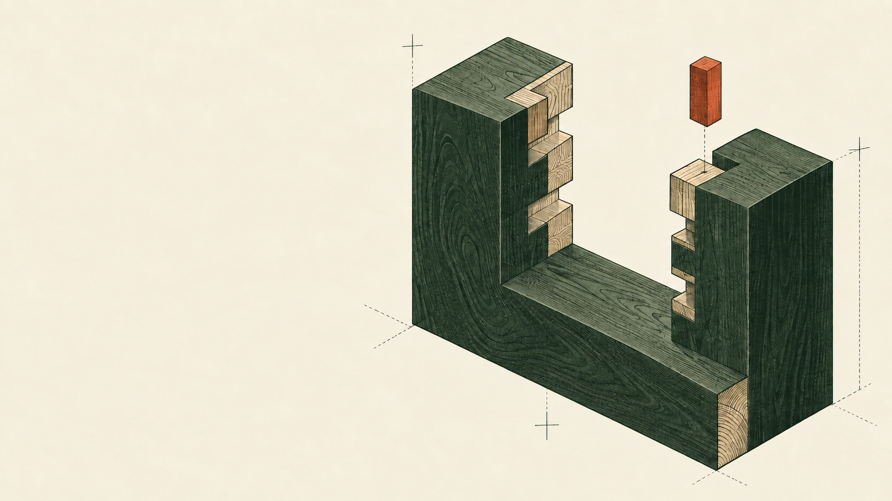
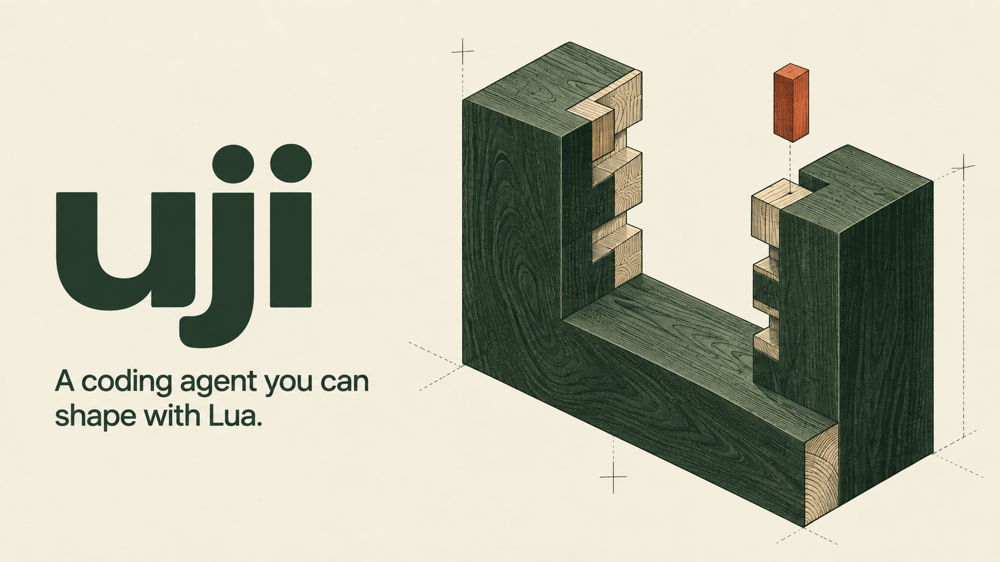

A programmable terminal agent
uji
A coding agent you can shape with Lua.
Change the tools, commands, keybindings and terminal layout. Embed the Rust engine in your own application.
Fitted to your workflow
Start with your own commands.
Define a command in Lua, then bind a key to it. The same API lets you add tools and arrange the terminal.
init.lua / configuration example
-- Add a command and a keybinding.
uji.command("hello", function()
uji.notify("Hello from your config.")
end)
uji.keymap.set("normal", "<A-h>", {
command = "hello",
})The mark and the materials.
Flat mark / print illustration
Paper
#F3EFDF
#F3EFDF
Ink
#26372E
#26372E
Olive
#8B9475
#8B9475
Wood
#C8BA96
#C8BA96
Vermilion
#C65036
#C65036
A cover for the README.
Open original image
